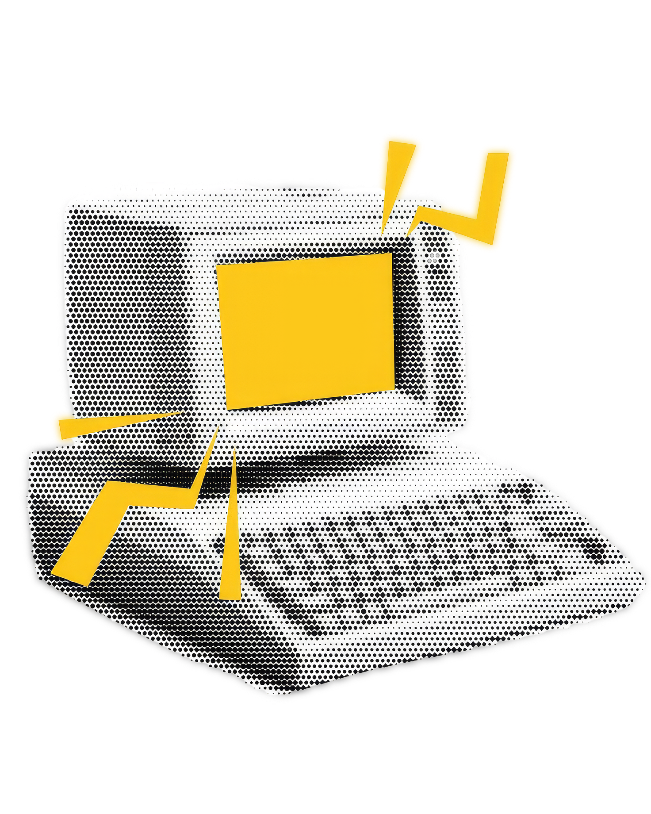
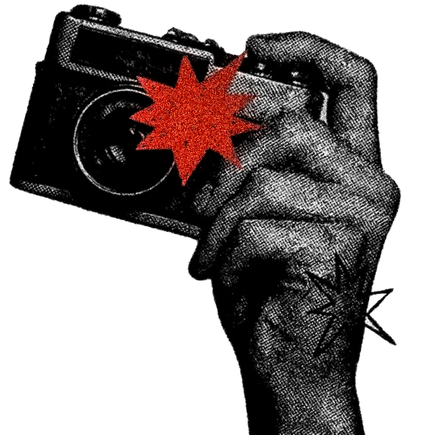

Welcome to your Digital Appointment!
Welcome to my webpage! This serves as a creative space where design, imagination, and visual storytelling come into alignment. The name is a play on my name, Kyla, and the idea of a chiropractor bringing things back into proper alignment. In the same way that a chiropractor works to create balance within the body, I use creativity and design to bring ideas into balance visually. Whether I am creating graphics, editing videos, or experimenting with new forms of digital art, my goal is to make each project feel intentional and complete. I believe that good design is more than just making something look nice; it is about making every element work together. Ky.ropractor represents my approach to creativity: finding what works, adjusting what does not, and bringing the whole vision together.

Creativity in Alignment
As a digital artist and aspiring designer, I enjoy turning ideas into visuals that communicate something meaningful. My creative process is constantly evolving as I explore graphic design, video editing, photography, and other forms of digital media. I am especially interested in how color, composition, typography, motion, and storytelling can work together to create a strong visual experience. Every project gives me an opportunity to learn something new, improve my skills, and discover another part of my creative style. I want my work to feel expressive while still being thoughtful, organized, and purposeful. Through Ky.ropractor, I hope to showcase not only what I can create, but also how I think, experiment, and grow as a creative.

Creative Alignment Fields
- Graphic Design
- Video Editing
- Digital Illustration
- Creative Direction
My creative process is inspired by finding the right balance between design and visual storytelling.